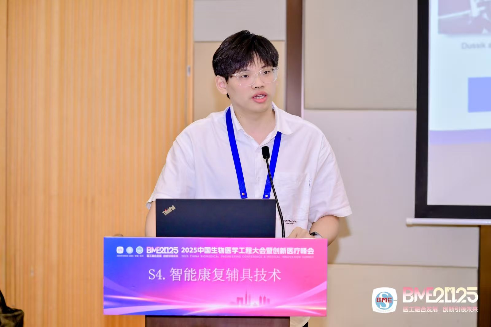

- An intelligent E-skin with spatiotemporal vibrotactile cues enable personalized gait rehabilitation in Parkinson's disease. Nature Communications, under review
- Edge AI-assisted Handheld Ultrasound for Rapid Triage of Blunt Thoracoabdominal Injuries. Nature Communications, under review
- Tissue-strain-tuned mechanotherapy restores sensorimotor control by re-engaging proprioceptive feedback circuits. Science Advances, under review
- Bidirectional Haptic Feedback for Prostheses via Flexible Sensing and Transcutaneous Electrical Stimulation. Advanced Functional Materials, under review
- An Adaptive Bone-Conduction Vibration in HMD for Cybersickness Mitigation. IEEE Transactions on Visualization and Computer Graphics, 2024
- Clinical and radiographic factors associated with lumbar spondylolisthesis: a multicenter cross-sectional study. European Spine Journal, under review
- Muscle activation patterns and gait changes in unilateral knee osteoarthritis patients: a comparative study with healthy controls. Clinical Rheumatology, 2024
- An Automated Platform for Coupling Human Motion Capture and Musculoskeletal Dynamic Analysis. 2025 AUA Postgraduate Forum，第一作者 / 通讯作者
- 膝骨关节炎患者下肢肌群表面肌电信号改变的研究进展. 中国康复医学杂志, 2025
- 燃灯续昼：异种器官移植研究简述. 探臻科技评论, 2024
Outputs
成果产出
包括论文成果、专利与软件著作权、荣誉获奖以及学术会议与报告。
Publications
论文成果
Patents & Software
专利与软著
专利
- 一种基于步态智能识别的时空调节振动康复刺激器，CN115590728B，2024-01-30，授权
- 耦合人体运动捕捉和肌骨动力学解算的方法和装置，CN120586375A，2026-03-20，授权
- 一种智能便携式步态检测装置和测试方法，CN117643467A，2024-03-05，公开
- 一种实时多模态传感器融合的人体运动捕捉与姿态优化方法，CN120850212A，2025-10-28，公开
软件著作权
- 人体步态分析系统 V1.0，登记号 2023SR0538171
- 基于深度视觉的目标检测与三维定位系统，登记号 2025SR1031897
- 人体足压分析系统，登记号 2025SR2314237
Recognition
荣誉获奖与会议
荣誉获奖
- 本科生国家奖学金（前 1%）
- 湖南省优秀本科毕业生（前 1%）
- 清华大学优秀营员
- 中国大学生数学竞赛二等奖
- 中国医疗器械创新创业大赛优胜奖
- 生物医学工程大赛三等奖
- 美国大学生数学建模竞赛 H 奖
- 中国互联网+ 银奖
- 中国大学生计算机设计大赛三等奖
- 中国大学生数学建模竞赛三等奖
- 中国大学生力学竞赛二等奖
- 2021-2022 学年校一等奖学金
- 湖南大学优秀学生干部
- 湖南大学优秀团干
- 湖南大学优秀志愿者
- 湖南大学体质达人

学术会议
- 2025 年清华大学第 717 届机械系博士生学术论坛
- 2025 年中国生物医学工程大会暨创新医疗峰会
- 2025 AUA Postgraduate Forum
- 2024 年康复工程学术大会